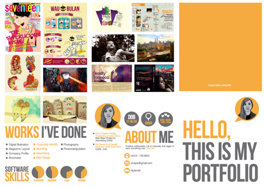
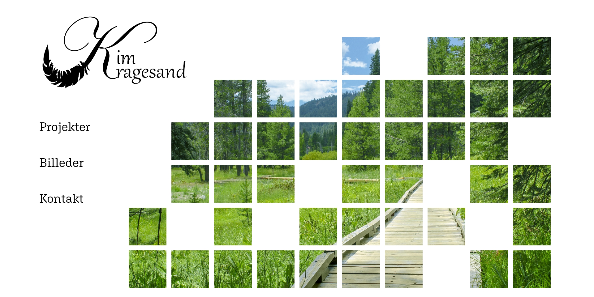
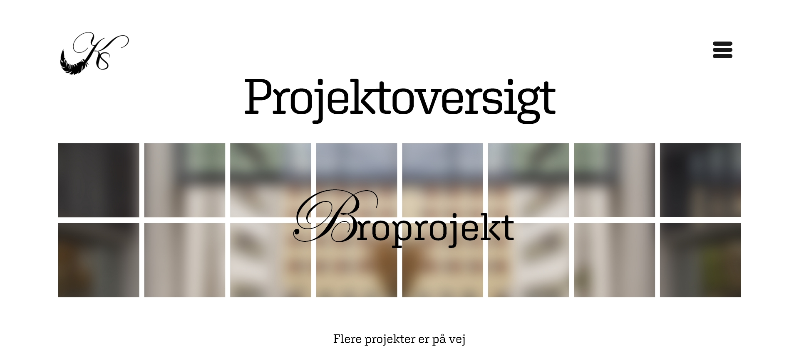
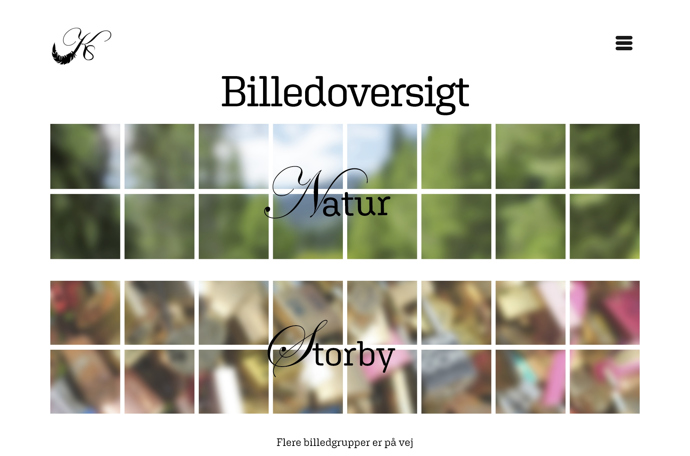
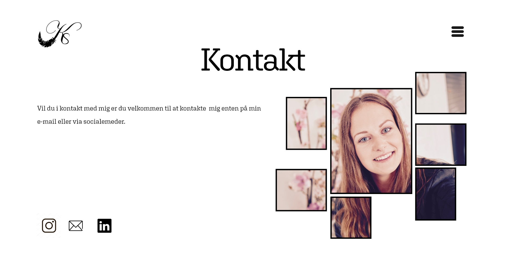
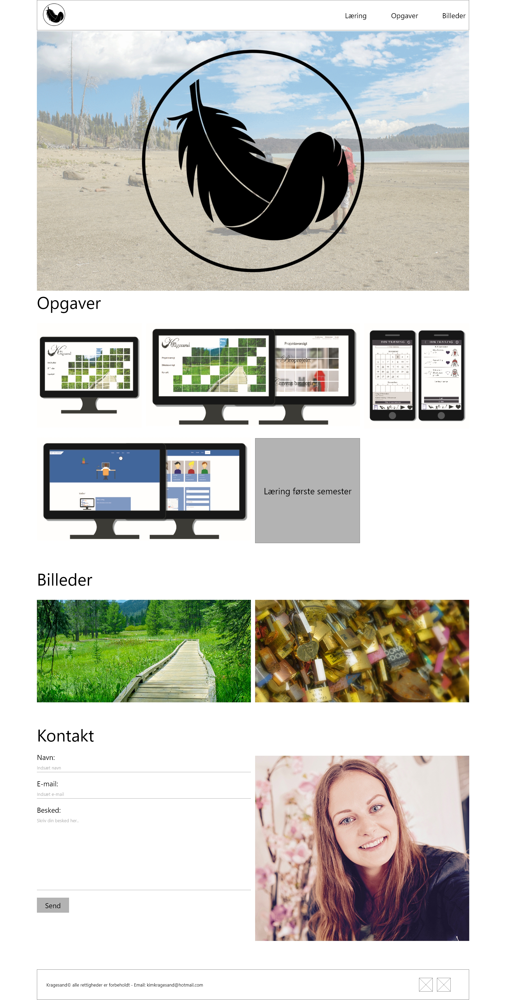

Drøm dit portfolio
Opgavebeskrivelse
Flowprojekt: Drøm din portfolio (15 study points)
En portfolio er et professionelt værktøj, som bruges til at vise dine kommende arbejdsgiver, hvem du er og hvad du kan.
Nu har du muligheden for at skitsere dit første oplæg til et portfolio i Adobe XD eller lignende prototypeværktøj. Aflever 1 PDF-fil (max. 3 sider og max. 10 MB) som beskriver og dokumenterer din prototype!
Tilføj et link i PDF'en til en online version af jeres portfolio (brug Adobe XD's "publish prototype"-link).
Vi udvælger enkelte portfolier til præsentation i klassen d. 14.09.
Studypoints
Individuel design opgave. Den giver 15 study points ud af samlet 25 study points i Flow 1.
Løsning
Min portefølje prototype er udarbejder i Adobe XD. Jeg har valgt at udarbejde det som en hjemmeside. Grunden til at jeg har valgt at lave det som en hjemmeside er da det er rarest at se billeder på en større skærm. Jeg ville selv foretrække at se andres billeder på en større skærm, så jeg kan se billeder bedre. Ligeledes foretrækker jeg at andre ser mine på en stor skærm.
Forside:
Forsiden er det først som folk ser, det er derfor rigtig vigtigt den repræsentere en. Baggrunden har jeg ladet være hvid, for at den ikke skal forstyrre. Jeg har indsat ét af mine billeder, for at gøre det mere interessant har jeg delt billedet op i en masse små firkanter. Det skulle gerne få seeren hoved lidt i gang, da de selv ville skulle forstille sig hvad der skulle være i de tomme felter.
Øverst på siden står mit navn på siden, så porteføljer vil blive forbundet med mig. Jeg har valgt at lave forbogstavet i skråskrift skrifttype, for at bryde de hårde og klare linjer og give forsiden noget femininitet. Yderligere har jeg valgt at holde forsiden simpel med få ting.
Skrifttyper:
De skrifttyper som jeg har på forsiden er også de skrifttyper som jeg bruger på resten af siden. ”K” i mit navn er skrevet med ”Edwardian Script ITC” og resten at mit navn er skrevet med ”Gabriola”. Jeg syntes at skrifttyperne komplimentere hinanden, da de kan flyde over i hinanden. Samt at de gør hverken mit navn for firkantet og kedeligt eller for drømmende og bryllupsagtigt.
Som brødtekst gør jeg brug af ”Aglet Slab”. Jeg har valgt denne som brød tekst da den er tydelig og nem og læse. Samt så har den stabil og rubusk følelses, uden at være for gammeldags, hvilket mange på arbejdsmarkede kigger efter. Jeg vil holde teksten til et minimum for at lade indholdet tale for sig selv.
Sideopsætning:
Sidetoppen:
Toppen er siderne skal alle være ens, med undtagelses af forsiden. De skal være ens for at gøre det nemt for brugeren. Øverst til venstre er mit logo. Ved at klikke på det, kommer man tilbage til forsiden.
Øverst højre side er der 3 bjælker, som symboliserer menuen. Menuen er en dropdown, med links de forskellige sider. På midten under de to ting, er overskriften på den pågældende side. Mit navn er samme skrifttype som på forsiden og resten af teksten er ”Aglet Slab”.
Oversigtsside:
Da der på min side vil komme flere projekter og billedkategorier har jeg valgt at lave en oversigtsside for at gøre det mere overskueligt. Bagerst på en kategori/projekt har jeg indsat et billedet og gjort det sløret for at det ikke skal tage opmærksomhed, men også for at skabe en stemning. Yderligere er de inddelt i firkanter, ligesom som billedet på forsiden (dog ikke med manglende firkanter, da det skal være en baggrund som ikke og ikke tage for meget opmærksomhed). Oven på billedet er der navnet på kategorien for at bryde det firkantede er det første bogstav samme skrifttype som ”K” i mit navn og resten i brødtekst. Når man klikker på et projekt eller billedkategori kommer man ind på en ny side om kan se indholdet.
Projektsiderne:
Projektsiderne vil være forskelligt opbygget fra projekt til projekt, da projekterne ikke er ens og derfor ikke kan sættes op og 100% samme måde. Er projektet stillet af nogle andre (f.eks. CPH Business) vil det stå under projektets navn. Disse sider vil typisk også indeholde lidt tekst.
Farver:
Baggrunden på alle siderne holder jeg hvide, for at holde siderne lyse og simple. Alt teksten er sort, så det er nemt at se og læse. Selvom denne sammensætning kan virke meget simpel og kedelig, syntes jeg det fungere godt til at drage opmærksomheden til billederne, som er hvor jeg vil havde fokusset, hvilket også er derfor at jeg har valgt at holde teksten minimal.
Billedsiderne:
På billedsiderne vil billederne stå i 2 kolonner hele vejen ned ad siden. Specielt billederne som er vandrette, bliver lidt små. Når man klikker på billedet, vil det blive stort og fylde næsten hele siden. Rund om billede vil der komme en sort boks som fylder resten af siden så siden ikke distraheret af baggrunden. Igennem det sorte kan man meget utydeligt se billedsiden. På pilene i siden kan gå til næste billede (så man forbliver i stort format). På krydset går man tilbage til billedsiden.
Kontakt:
På siden kontakt er det et billede af mig, det er vigtigt for mig, da mange ud fra mit navn antager at jeg er en mand (Hvilket også er der for jeg gerne ville havde lidt femininitet indover mit navn der står på hver side). Billedet er et hvor jeg er glad og med varme farver, så jeg ser åben og imødekommende ud. Nederst på siden er der link til min instagram, min e-mail og min Link In (hvis de gerne vil vide mere om mig og mine erfaringer).
Logo:
Mit logo er et K og S for Kragesand som er en del af mit navn og hvad hjemmesiden kommer til at hedde. På K’et har jeg tilføjet en fjer da staten af navnet er krage. En af grunden til at jeg har valgt at gå med dette navn er fordi at det er specielt og min familie er den eneste som hedder det. Hvilket betyder at chancen for at der er nogle der bruger det i forvejen er lille. Alle domæne sider var ledige indtil jeg købte .dk. På forsiden er logoet uden S, men så stor mit navn der i stedet.
Feedback fra underviserne
- Forside
- Gør teksten mindre
- Flyt punkterne længere sammen
- Forsvindingspunktet på billedet er væk
- Logoet skal flyttes ned så det er på linje med overskrift
- "K" med mit navn skal være mindre
- På kontakt siden skal de sorte rammer rundt om billedet væk
- Burger menuen skal væk, det skal laves som en tekst menu
- Evt. hav en font mindre, så der er to istedet for tre
- Broprojektet skal rydes op
- På oversigts siderne, kan kategorierne være svære at læse
- Forside
Remake
Min remake er ligeledes udarbejdet i XD.
Den Feedback som jeg fik i dette projekt rettede jeg til det næste, hvor jeg har kodet mit portfolio. For at finde ud af hvad der skulle rettes foretog jeg en brugertest på min kodet portofolio og udarbejde en XD ud fra det. Resultatet af brugertesten er under mit eksamens projekter.
Den primærer forskel drejer sig om logo, forsiden, projektoversigt/billedoversigt og kontakt.
I den originale er forsiden, projektoversigt, billedoversigt og kontakt på hver sin side. Det har jeg samlet til én forside på den nye version. Ved at samle det på en side, giver det er samlet overblik samt at det for brugeren side betyder færrer klik.
Logoet har jeg ændret, da nogle så mit første logo som cKs. På det nye logo har jeg valgt at beholde fjeren for symbol for "krage" i mit navn Kragesand.
Da jeg fik positiv feedback på mit store billede på forsiden valgte jeg at beholde det men med mit logo hen over og så ikke noget ved siden af.
Da jeg ikke har så mange projekter, har valgte jeg at fokusere på det opgaver som jeg har lavet i skolen og så senere tilføje projekter til mit portfolio. Der er derfor på den originale version en som hedder projekter men ikke på den nye, den har tilgengæld en kategori med opgaver.
Billedoversigts siden er der ikke den store forskel på.
På kontakt er rammerne rundt om billedet fjernet og der er indsat en kontakt formular.
Original version
   Remake version
